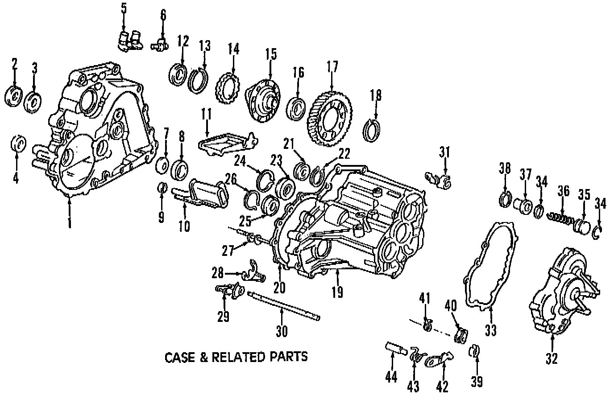
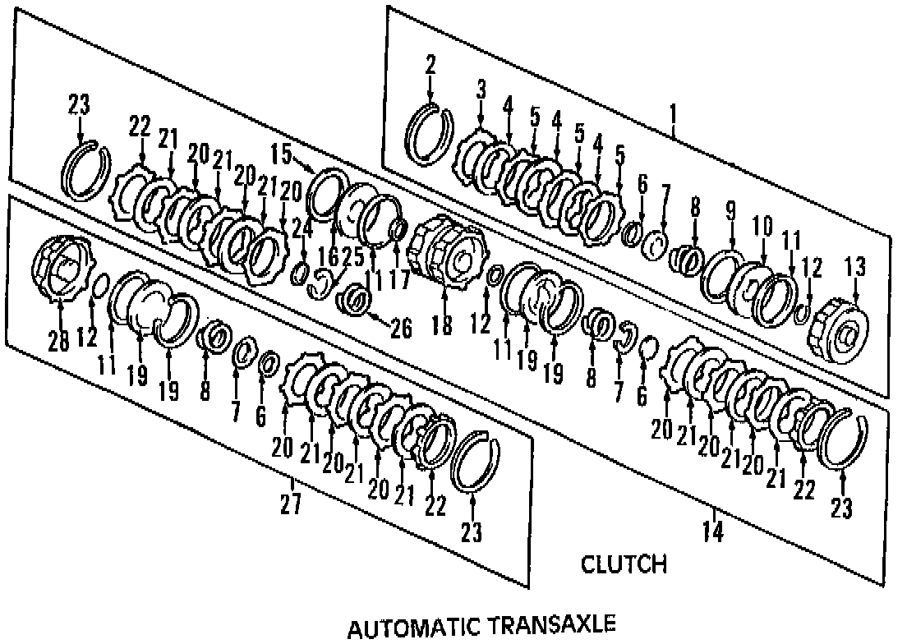
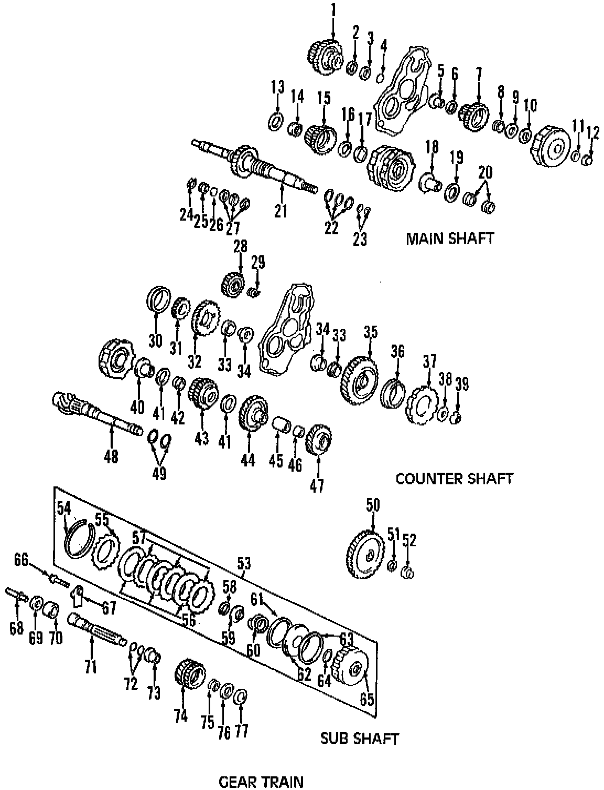
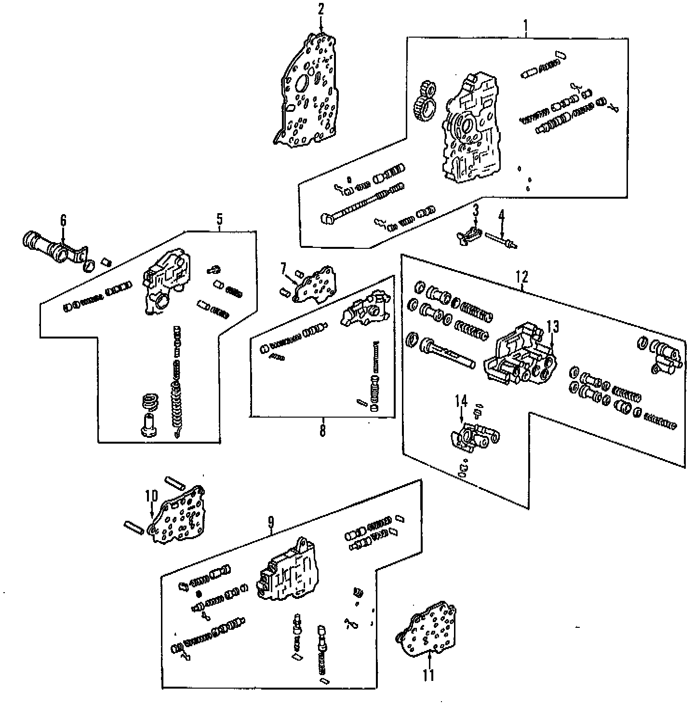

Operation CHARM
: Car repair manuals for everyone.
Home
>>
Acura
>>
1994
>>
Integra (RS, LS) L4-1834cc 1.8L DOHC FI
>>
Parts and Labor
>>
Transmission and Drivetrain
>>
Automatic Transmission/Transaxle
>>
Images
Images
Case & Related Parts:

Clutch:

Gear Train:

Valve Body, Regulator & Servos:
